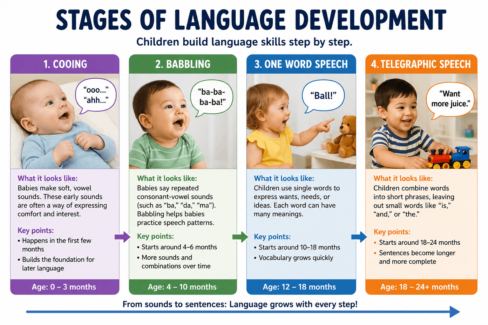

Language is a shared, mutually agreed-upon system of arbitrary symbols that are rule-governed and highly generative. This system allows humans to communicate an infinite array of ideas, feelings, and novel concepts to one another. While our communication styles vary across cultures, the underlying structural properties and biological timeline of language acquisition remain remarkably universal. On the AP Exam, you will need to know both the structural anatomy of language and the developmental milestones infants cross as they learn to speak.
💡 AP Exam Tip: To keep your study plan streamlined and efficient, note that the pragmatics of language (the social rules governing how language is interpreted in varying contexts, such as sarcasm or politeness) are explicitly outside the scope of the AP Psychology Exam!
Every language requires a rigid architectural layout to transform raw sounds into complex, abstract thoughts. This structure is governed by a broad set of rules known as grammar—the comprehensive system that dictates how words are structured, altered, and combined to produce meaningful communication. Psychologists split language structure into smaller, testable sub-components:
To ensure that ideas are structured logically, language relies heavily on syntax—the precise grammatical rules that dictate the required arrangement, order, and sequence of words within a sentence to build a grammatically accurate and easily understood statement (e.g., in English, adjectives generally precede nouns, such as saying "the white house").
Long before infants can produce formal words, they actively utilize nonverbal manual gestures (such as pointing at an object or waving goodbye) to establish a communicative bridge with caregivers. As their neurological and vocal structures mature, children across all distinct cultures naturally progress through a predictable, universal timeline of speech development:

A visual timeline of language development.
As children grow and their understanding of syntax expands, they actively attempt to internalize structural linguistic patterns. Because they lean heavily on universal rules before mastering structural irregularities, they frequently fall victim to overgeneralization (sometimes called overregularization).
This language learning error occurs when a child takes a standard grammatical rule and applies it too broadly to irregular words that do not follow the guideline. Classic examples include adding standard past-tense suffixes to irregular verbs (such as saying "I goed to the park" instead of "went") or applying plural rules incorrectly (such as declaring "I saw three mouses" instead of "mice"). These errors are highly fascinating to psychologists because they prove that children do not just blindly mimic adult speech; they actively attempt to calculate and apply internal grammatical rules!
Review Video: Language. This Crash Course Psychology episode provides a perfect, high-yield overview of how we construct meaning using building blocks like phonemes, morphemes, and syntax, as well as how children naturally acquire speech.
⚠️ Phonemes vs. Morphemes: This is a highly frequent point of confusion on the AP Exam! To protect your score, use these simple mnemonic hooks:
• Phoneme starts with 'P', just like Phone—it is strictly about the basic raw sound.
• Morpheme starts with 'M', just like Meaning—it is the smallest unit that carries an actual meaning.
Remember: a single letter can sometimes be both! The word "I" is a single sound (phoneme) and it also carries distinct meaning on its own (morpheme).
Lock in your knowledge of structural language properties and developmental timelines before your next unit test: